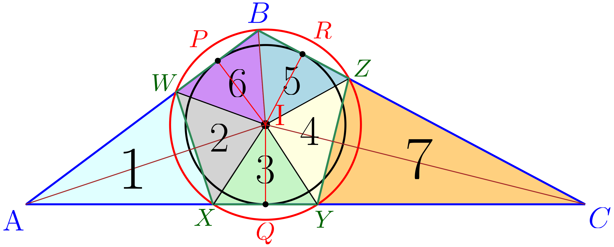
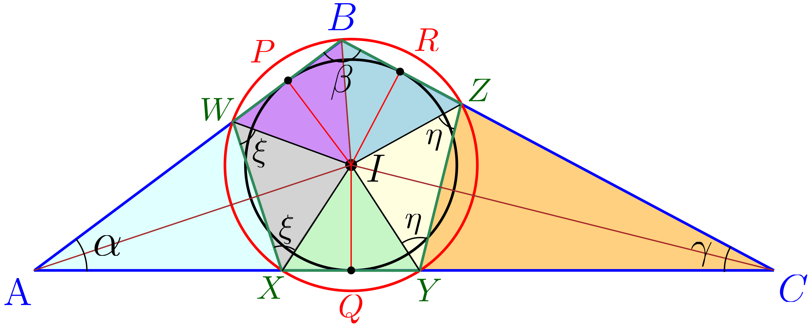
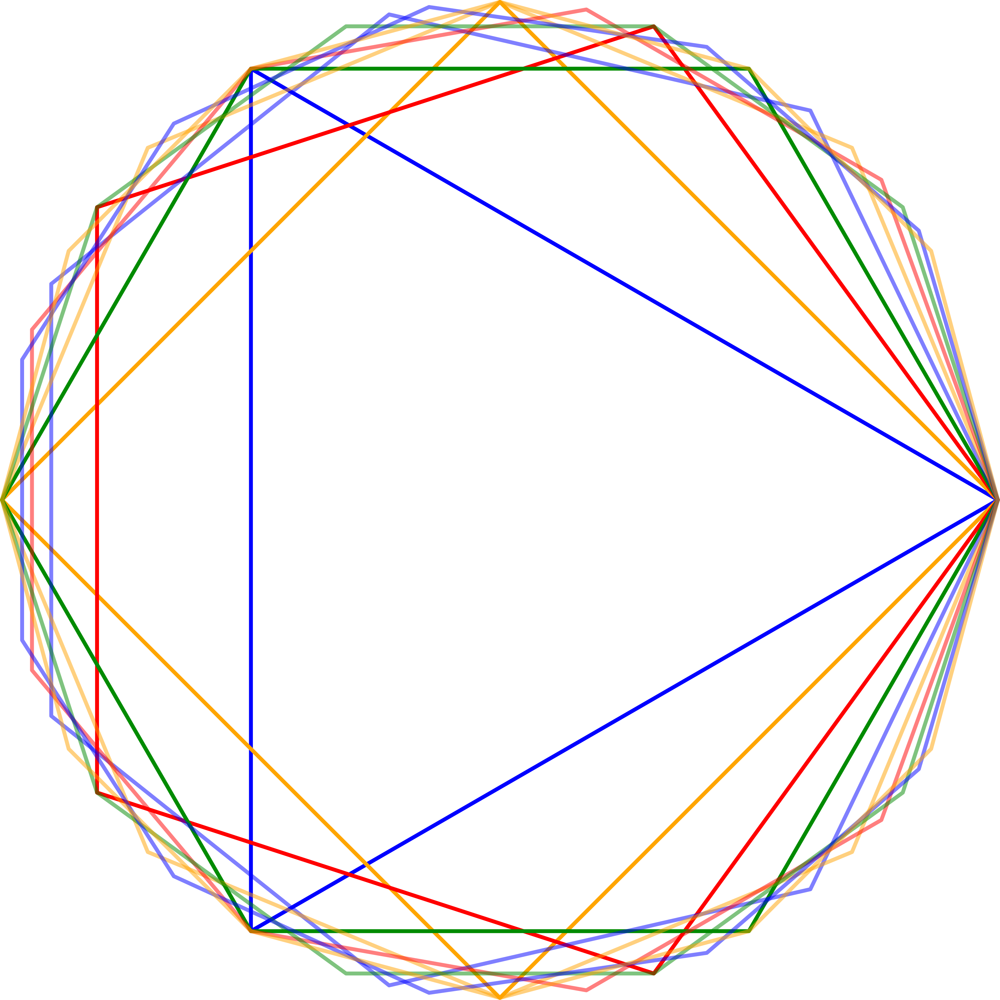

Manuscript
A Sharp Piecewise Generalization of Nesbitt’s Inequality. Solo manuscript (2026), refined through referee-style review rounds.
Nesbitt’s inequality says that for positive \( a,b,c \),
\[ \frac{a}{b+c} + \frac{b}{c+a} + \frac{c}{a+b} \;\ge\; \frac{3}{2}, \]with equality at \( a=b=c \). Raise each term to a power, replacing the sum by \( \sum \left(\tfrac{a}{b+c}\right)^{\alpha} \), and ask what the sharp lower bound becomes as a function of \( \alpha \). The answer isn’t one smooth formula: for small \( \alpha \) the symmetric point stays optimal, while past a threshold the extremum jumps to a boundary configuration. That threshold, a genuine phase transition in the sharp constant, lands exactly at
\[ \alpha^\star = \log_2 \tfrac{3}{2} \approx 0.585. \]The paper establishes the sharp constant piecewise on each side of \( \alpha^\star \) and proves the crossover is where the two regimes meet. It’s the result I’m fondest of: an olympiad-flavored inequality that hides a clean transition once you let it vary.
pdf solo manuscript · complete
Manuscript
Acute Triangulation of Obtuse Triangles: A Constructive Geometric Approach. Solo manuscript (2025).
Any polygon can be cut into triangles; requiring every piece to be acute is much harder, and for a single obtuse triangle it isn’t obvious it can be done at all. Motivated by a deliberately silly picture, a child who will only eat an obtuse cookie in acute-triangle bites, the paper proves that every obtuse triangle admits a triangulation into either seven or eight acute triangles.

The construction is explicit: drop the incenter, its angle bisectors, and perpendicular projections, then add a circle through the obtuse vertex, and verify each resulting piece is acute using congruence, symmetry, and angle inequalities. A short lemma handles the leftover near-right and very-obtuse cases, which is where the eighth triangle can appear. The method is universal rather than minimal, and I discuss where fewer pieces might be possible.

pdf solo manuscript · complete
Manuscript
Maximizing the Area of Polygons with Fixed Perimeter: The Regular Polygon. Solo manuscript (2025).
Among all simple \( n \)-gons with a fixed perimeter \( P \), which encloses the most area? The intuitive answer, the regular one, is true, and this paper proves it from the ground up. The engine is a lemma about a triangle inscribed in a circle: if two of its sides are unequal, sliding the odd vertex along the arc toward the perpendicular bisector strictly increases the area while fixing the base. Iterated, that forces a cyclic polygon to be regular to be optimal.

Extending past the cyclic case uses the isoperimetric inequality and a convexity argument on \( \sin \), giving the clean bound
\[ S \;\le\; \frac{P^2}{4n}\,\cot\!\left(\frac{\pi}{n}\right), \]with equality exactly for the regular \( n \)-gon. Letting \( n \to \infty \) recovers \( S \to P^2/4\pi \), the circle, so the discrete result sits underneath the classical continuous one as a special case.
pdf solo manuscript · complete